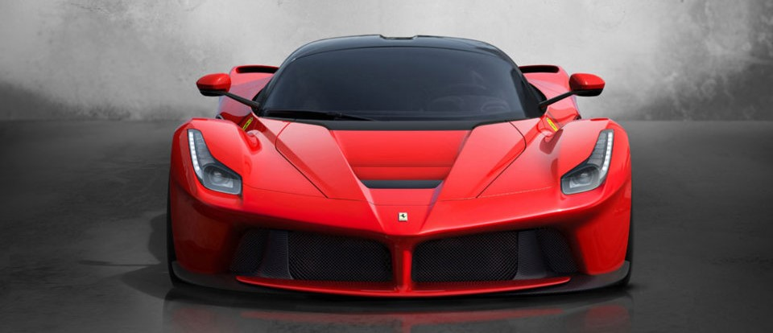
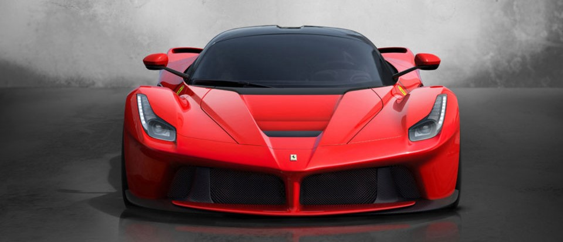
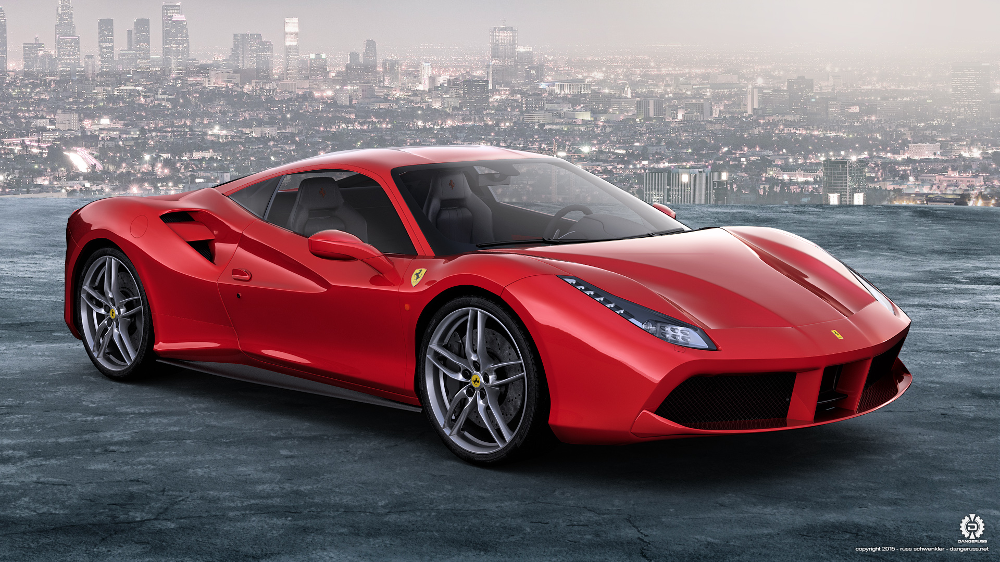
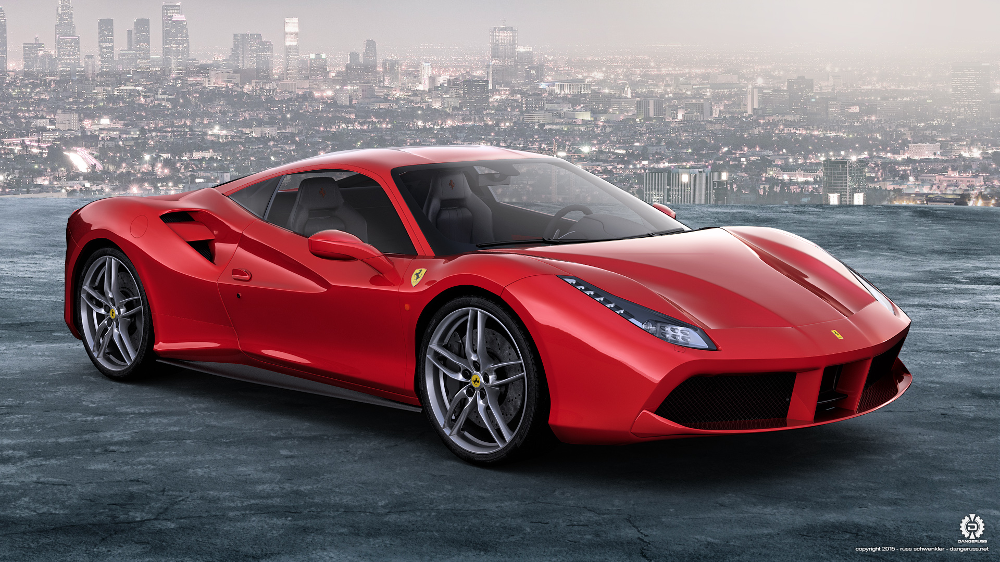

FERRARI’S UNIQUE CORE VALUES HAVE BEEN RAISED TO A WHOLE NEW LEVEL IN THE CAR LAUNCHED TO MARK THE 70TH ANNIVERSARY OF THE FOUNDATION OF THE COMPANY.
Designed for Ferrari’s most passionate clients, the LaFerrari Aperta is the new limited-edition special series model, and just a few examples – all of them already accounted for - of this spider version of the acclaimed LaFerrari supercar will be built.
THE FASTEST AND MOST POWERFUL FERRARI YET
The first and most difficult challenge Ferrari always faces when it decides to develop a new model is to push the boundaries of its own achievements yet again.
This challenge is made all the tougher when the task at hand involves designing a new 12-cylinder engine, the power unit that hailed the start of the glorious Prancing Horse story 70 years ago in 1947.
FORTY YEARS ON FROM THE UNVEILING OF FERRARI'S FIRST EVER MID-REAR-ENGINED V8 BERLINETTA, THE 308 GTB, THE PRANCING HORSE OPENS A NEW CHAPTER IN ITS 8-CYLINDER HISTORY.
The 488 GTB name marks a return to the classic Ferrari model designation with the 488 in its moniker indicating the engine's unitary displacement, while the GTB stands for Gran Turismo Berlinetta.
 

 
